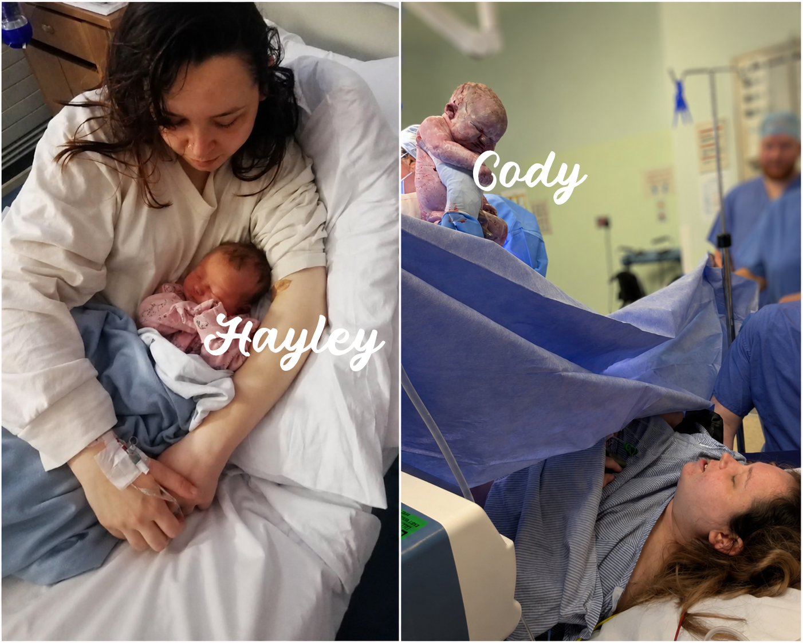

💜 My Story
A little more about the person behind everything I do.
Hi, I'm a mum of two, I have a boy and a girl — and I am from East Sussex. I wanted to create this page to share a little more about the person behind everything I do and some of the challenges I'm facing in my life.

Mental health is a big part of my story. I live with OCD, which is the condition I struggle with the most, as well as autism, an anxiety disorder and depression.
My OCD can be incredibly difficult to live with and isn't always understood by people who haven't experienced it. I've written more about OCD and my own understanding of it here.
Alongside my mental health, I also live with type 2 diabetes and an underactive thyroid, so life can sometimes feel like there is quite a lot to manage at once.
I'm also a mum, which is one of the biggest parts of my life. My daughter has suspected autism, and my son suffers from extreme eczema. Like any mum, I want to do everything I can for my children while navigating the challenges that come with looking after a family.
Despite everything, I'm someone who loves learning. I'm especially interested in technical things, and there's something incredibly satisfying about figuring out how something works. Even better, I love taking what I've learnt and teaching it to somebody else. 💜
Financially, things aren't easy for me at the moment. The rising cost of living has contributed to me getting into debt, and I'm trying to gradually work my way out of it.
I'm currently reliant on benefits, but one of my biggest goals is to slowly build ways of earning my own money so that I can become less dependent on them.
I'm not there yet. In truth, I'm not doing particularly well at the moment — but I am trying.
I'm learning, creating and looking for ways to build something for myself and my family, even when my mental health makes that much harder.
If you've found this page because you've followed something I've created, read something I've written, or simply wanted to know more about me, thank you for taking the time to read my story. 🫶
And if you ever choose to support me or donate, please know that it's genuinely appreciated. It helps me work towards getting out of debt, supporting my family and, hopefully, creating a future where I can rely more on the things I build and create.
But there's absolutely no pressure to donate. Even reading my story, sharing my work, or sticking around to see what I create next means a lot.
This is only one part of my story — and I'm still writing the rest. 💜